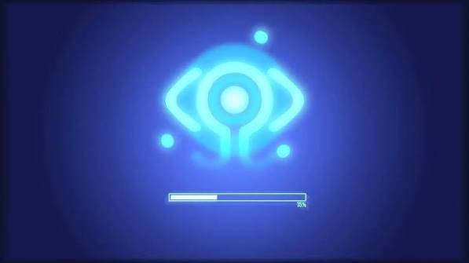
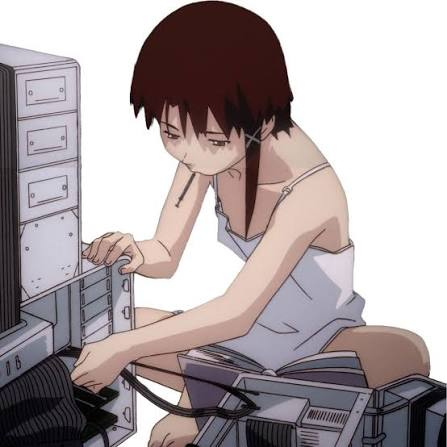
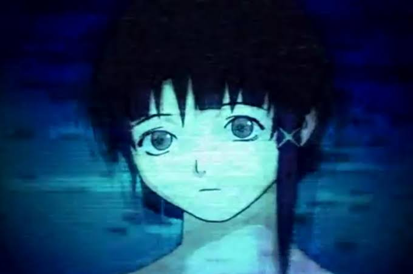

Comentarios sobre la Serie
"No importa a dónde vayas, todos están conectados." La serie anticipó de manera visionaria la era de las redes sociales, la realidad virtual y la pérdida de privacidad en la era digital.
Una serie de culto de 1998 que explora la frontera entre el mundo real e Internet (The Wired). A través de Lain Iwakura, la historia profundiza en la identidad, la conciencia colectiva y la tecnología.
"No importa a dónde vayas, todos están conectados." La serie anticipó de manera visionaria la era de las redes sociales, la realidad virtual y la pérdida de privacidad en la era digital.



> "And Present Day... Present Time! Hahahahaha!"